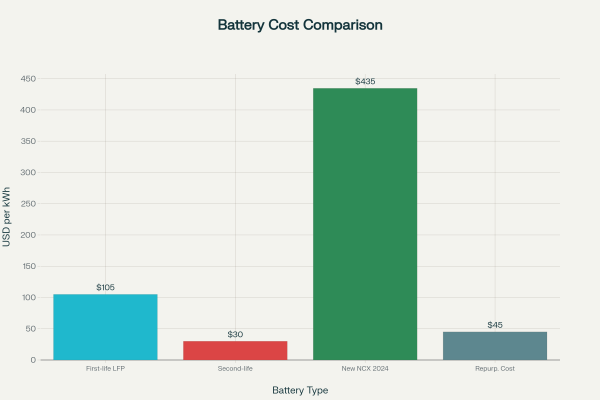
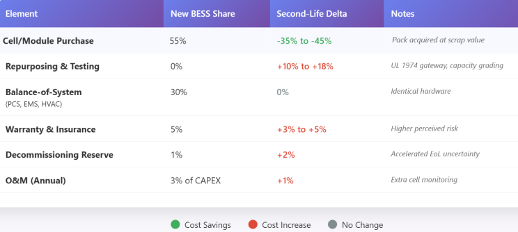
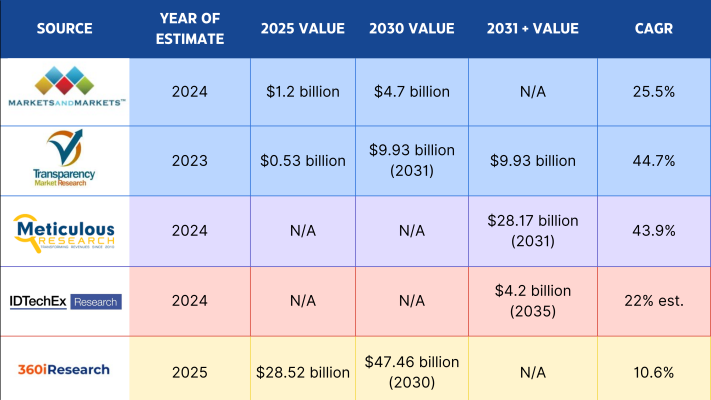
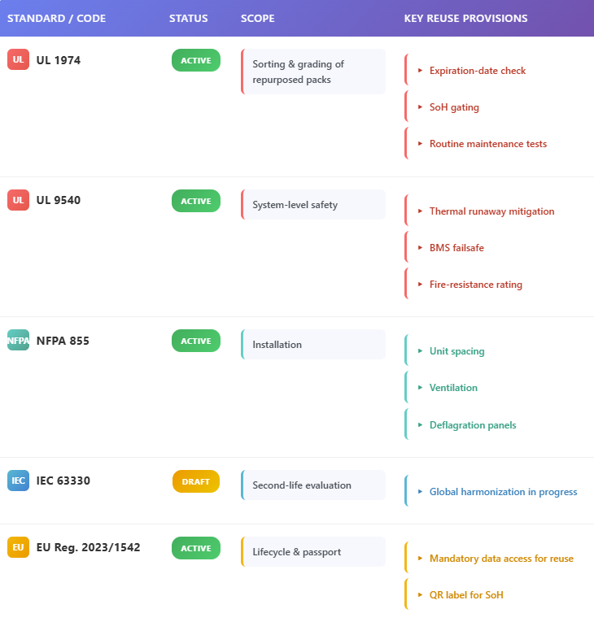
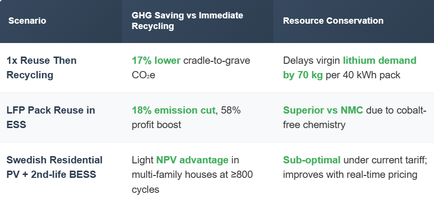
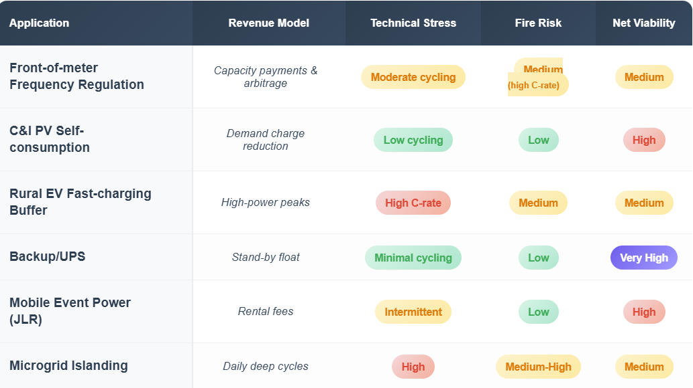
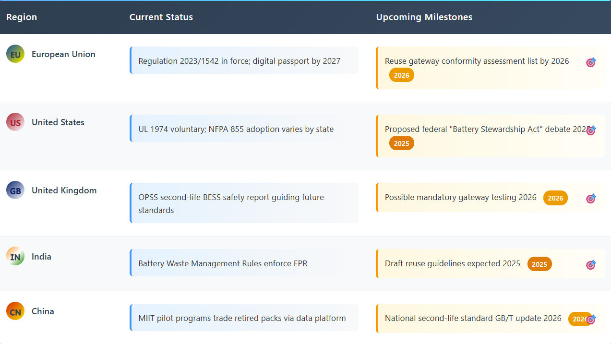
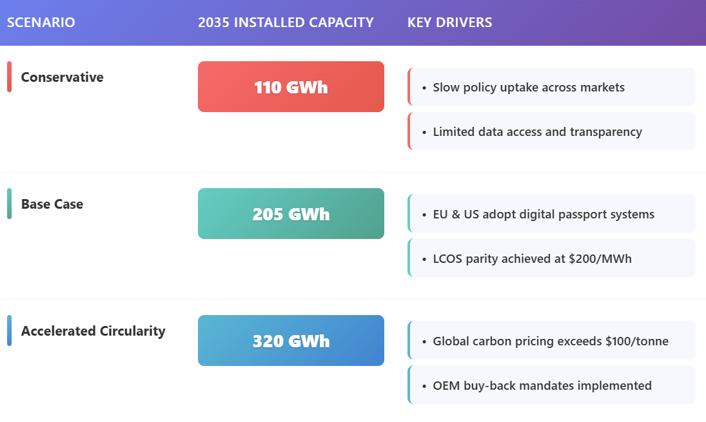

For grid operators, developers and investors, the idea of repurposing the flood of retired electric-vehicle (EV) batteries into stationary battery-energy-storage systems (BESS) promises lower capital costs and faster progress toward decarbonization. Yet every reused pack also brings uncertainties—from degraded performance to heightened fire risk. This newsletter unpacks the opportunity and the pitfalls in depth.
Executive Summary
Second-life BESS projects are scaling rapidly because repurposed packs can cost 20-35% less upfront than new lithium-ion systems while avoiding 17% of embedded carbon versus direct recycling. Analysts project market values ranging from $4.7 billion in 2030 to $28.17 billion by 2031, implying 25-45% compound growth. However, levelized-cost-of-storage (LCOS) estimates remain 234-278 $/MWh—still above new-build systems—unless discount rates, repurposing costs and cycling depth are optimized. Fire incidents in Korea, Arizona and the UK demonstrate that degraded cells pose real hazards if thermal-runaway barriers, UL 1974 grading, NFPA 855 spacing and robust ventilation are omitted. The bottom line: second-life BESS is viable but only under stringent safety, warranty and financing frameworks.

Market Drivers and Demand Signals
Volume of Retired Batteries
- Global EV stock will exceed 240 million by 2030, translating into 1 TWh of end-of-first-life batteries within a decade.
- Most packs still hold 70-80% capacity when removed from vehicles, sufficient for less demanding stationary roles.
Cost & Carbon Advantages
- Repurposed modules reduce upfront costs to 64.3-78.9% of new-build equivalents.
- Life-cycle analyses show an additional 58% profit and 18% emission reduction for LFP chemistry when reuse precedes recycling.
- Extending life delays raw-material demand at a time when lithium, cobalt and nickel could rise 500% by 2050.
Circular-Economy Policy Tailwinds
- The EU Battery Regulation 2023/1542 mandates digital passports, carbon-footprint labels and second-life access to pack data starting 2027.
- India’s Battery Waste Management Rules impose extended producer responsibility for reuse or recycling.
Economics: Crunching the Numbers
CAPEX & OPEX Profile: Repurposed systems avoid cell procurement costs but incur additional testing, disassembly and logistics expenses.

Levelized Cost of Storage: Steckel’s harmonized LCOS model yields 234-278 $/MWh for 15-year second-life projects vs 211 $/MWh for new packs, heavily influenced by discount rate, depth of discharge and repurposing cost. At discount rates below 6%, second-life parity becomes achievable.
Market Size Forecasts

Financing, Insurance and Warranty
- Data-driven performance guarantees from Altelium/Tokio Marine Kiln lower lender risk premiums.
- Insurance underwriters increasingly demand early design engagement, minimum spacing and detailed degradation models to price property and liability coverages.
- Developers must budget higher deductibles or sub-limits for projects using mixed-origin packs.
Technical Performance Barriers
State-of-Health (SoH) Variability: Retired packs exhibit heterogenous capacities (60-85% SoH) and internal resistance profiles, complicating module balancing.
Battery Management System (BMS) Retrofitting: OEM BMS firmware may hinder access; open-protocol retrofits or “middleware BMS” layers are emerging to aggregate packs from multiple brands while respecting CAN bus security.
Cycle Life Expectations: While EV duty cycles degrade cells quickly at high C-rates and extreme temperatures, stationary applications with 0.2-0.5 C operation extend life by 8-10 years—about 3,000 additional cycles.
Integration Architecture: Containerized pods or rack-based retrofits must accommodate varying form factors (pouch, prismatic, cylindrical). Custom busbar and cooling designs add engineering time but allow mixing chemistries in separate strings under a unified EMS.
Safety and Risk Profile
Thermal Runaway Incidents
- 30+ large-scale BESS fires recorded globally since 2018, with many in second-life systems lacking robust ventilation.
- Arizona 2019: 2 MWh system explosion injured firefighters; root cause traced to cascading failure from one cell with latent defect.

Hazard Pathway: Four stages: abuse factor → off-gassing (CO, H₂) → smoke → flame. Off-gas sensors such as Li-ion Tamer provide early detection before smoke phase.
Codes, Standards and Best Practice

Mitigation Techniques
- Cell-level fuses and module-level fire barriers to halt propagation.
- Active cooling redundancy; liquid cooling preferred for high-density racks.
- Gas detection linked to automated HVAC exhaust.
- Emergency response plans rehearsed with local fire services; water-mist and aerosol systems validated for Li-ion suppression.

Business Models and Real-World Deployments
Connected Energy (UK/EU): Fleet of 1st-generation Renault-Nissan modules powering 300 kW to multi-MW systems since 2010; field data confirm 10-year secondary life expectancy.
JLR + Allye Portable BESS: Seven PHEV packs deliver 270 kWh per trailer-mounted unit for event power; directly reuses OEM BMS without cell teardown.
Einride Smartcharger Stations: Decommissioned truck packs store PV energy to enable low-cost overnight charging; digital platform predicts degradation and trading value.
GM Milford Data Center: Chevrolet Volt packs buffer onsite solar-wind microgrid, demonstrating modular reuse with minimal remanufacturing.
Environmental and Lifecycle Assessment
Second-life use shifts environmental burdens:

Viability Matrix by Use Case

Risk Management Toolkit
Technical Due Diligence Checklist
- Verify UL 1974 certification of supplier and lot traceability.
- Conduct 100% OCV, IR and SoH testing; reject packs <70% capacity.
- Simulate string-level degradation impact on round-trip efficiency.
- Require UL 9540A test report for container design and ventilation.
Insurance Best Practices
- Engage insurers pre-design to align on clearance and fire-wall schemes.
- Detail cyber-security hardening for remote BMS control to qualify for cyber extensions.
- Negotiate contingent-business-interruption cover tied to EPC delays.
Warranty Structures
- Performance-linked premium models (Altelium/TMK) adjust yearly based on real BMS data, freeing OEM capital.
- Minimum warranty: 70% capacity retention for 7-10 years or specific MWh throughput.
Regulatory Watchlist

Strategic Recommendations
Developers & EPCs
- Prioritize applications with low C-rate duty cycles and stable revenue (backup, peak-shaving).
- Model LCOS across degradation scenarios; include repurposing capex sensitivity.
- Secure data-driven performance warranties to unlock cheaper debt.
Investors & Lenders
- Demand third-party SoH audit and UL 1974 compliance before financial close.
- Price higher contingency for mixed-chemistry systems; favor homogeneous NMC- or LFP-only strings.
Policymakers
- Provide investment tax credits parity for second-life storage to level LCOS gap with new batteries.
- Mandate open BMS data sharing to stimulate grading market and prevent “data lock-in”.
OEMs
- Design packs for easier module replacement, embedded QR battery passport, and lower disassembly cost.
- Monetize residual value via take-back partnerships, turning EoL liability into revenue.
Outlook to 2035: Scenarios

Even in the conservative path, second-life batteries could supply nearly one-quarter of projected stationary-storage demand, easing raw-materials pressure and cutting system costs.
Conclusion
Second-life EV batteries are not a universal remedy, but where policy, engineering and financing co-align, they offer a pragmatic bridge to deeper decarbonization. The technology is viable—provided rigorous safety standards, transparent data and robust warranties are in place. Ignore those guardrails, and the approach quickly becomes risky. The next decade will reveal which players master the balance.